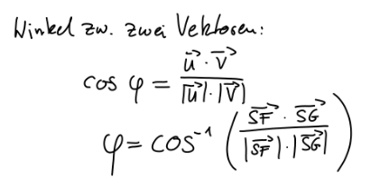
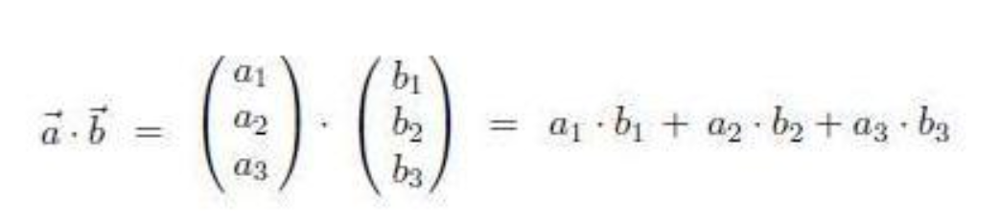

-
Was ist das Skalarprodukt?: Das Skalarprodukt ist eine Operation mit multiplikation
mit zwei Vektor, dessen Ergebnis ein Skalar ist.
In der analytischen Geometry werden eindimensionale Zahlen (also ganz normale Zahlen)
als "Skalar" bezeichnet. Multipliziert man Vektor und Skalar wird der vektor skaliert; seine Länge ändert sich
-
Was kann das Skalarprodukt?: Das Skalarprodukt ist in soweit interessant, dass es uns ermöglicht,
den Winkel zweier Vektoren zu bestimmen.
-
Mit Hilfe einer goofy aussehenden Formel, die ich 1:1 von unserer Lehrerin kopieren werde:

SF und SG sind aus einem Beispiel aus dem Unterricht.
u und v sind typische Platzhalter für Vektoren
-
Fassen wir dies nun in Worte:
- Der Winkel zweier Vektoren
- Ist gleich
- Cosinus hoch -1 von
- Das Skalarprodukt von u und v
-- - Geteilt durch
- Die Länge von u multipliziert mit der Länge von v
-
Das Skalarprodukt wird leider mit einem Punkt ausgedrückt, der auch häufig für normale Multiplikation verwendet wird-
Wird aber so berechnet:

Es ist wichtig einen Punkt zu benutzen, es gibt auch ein Kreuzprodukt welches mit einem kruez ( x ) gekennzeichnet wird.
-
Schreibt man die beiden Vektoren (a + b) bzw. (u + v) nebeneinander,
kann man einfach die auf einer Höhe korrospondierenden Komponenten miteinander multiplizieren,
und anschließend die Ergebnisse addieren.